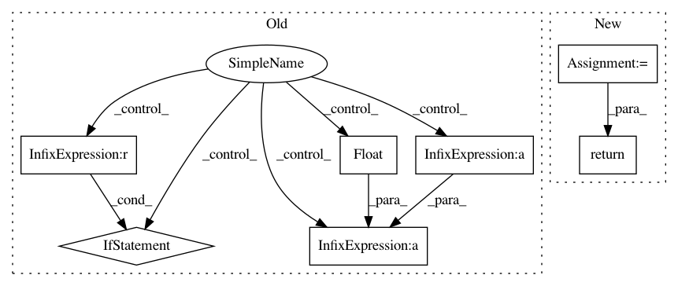

c8f605e47dcefe192f3a9b477f3e56b437615e34,pytorch_lightning/metrics/classification/precision_recall.py,Precision,compute,#Precision#,108
Before Change
def compute(self):
if self.average == "micro":
return self.true_positives.sum().float() / (self.predicted_positives.sum() + METRIC_EPS)
elif self.average == "macro":
return (self.true_positives.float() / (self.predicted_positives + METRIC_EPS)).mean()
After Change
of classes
tp, fp, tn, fn = self._get_final_stats()
return _precision_compute(tp, fp, tn, fn, self.average, self.mdmc_reduce)
class Recall(StatScores):
r
In pattern: SUPERPATTERN
Frequency: 3
Non-data size: 7
Instances
Project Name: williamFalcon/pytorch-lightning
Commit Name: c8f605e47dcefe192f3a9b477f3e56b437615e34
Time: 2021-01-18
Author: tadej.svetina@gmail.com
File Name: pytorch_lightning/metrics/classification/precision_recall.py
Class Name: Precision
Method Name: compute
Project Name: OpenNMT/OpenNMT-py
Commit Name: ba164c0dbb3d8171004380956a88431f4e8248ba
Time: 2017-08-01
Author: bpeters@coli.uni-saarland.de
File Name: onmt/Models.py
Class Name: Embeddings
Method Name: make_positional_encodings
Project Name: williamFalcon/pytorch-lightning
Commit Name: c8f605e47dcefe192f3a9b477f3e56b437615e34
Time: 2021-01-18
Author: tadej.svetina@gmail.com
File Name: pytorch_lightning/metrics/classification/precision_recall.py
Class Name: Recall
Method Name: compute